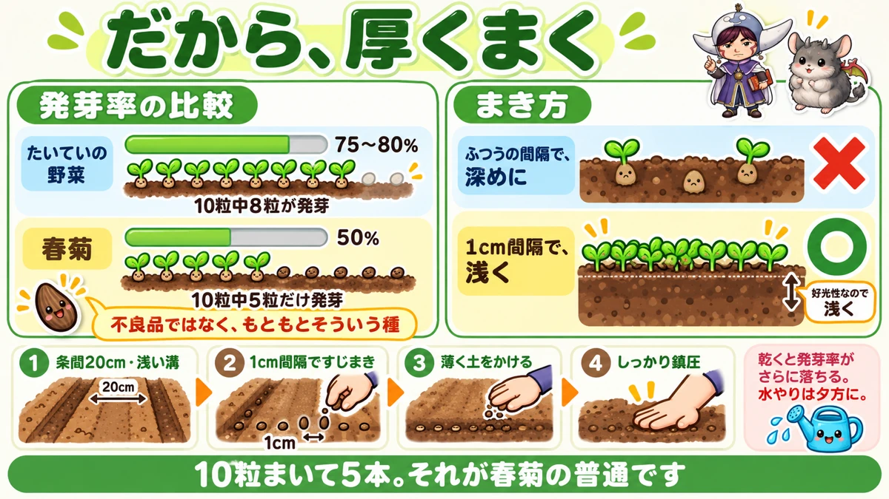
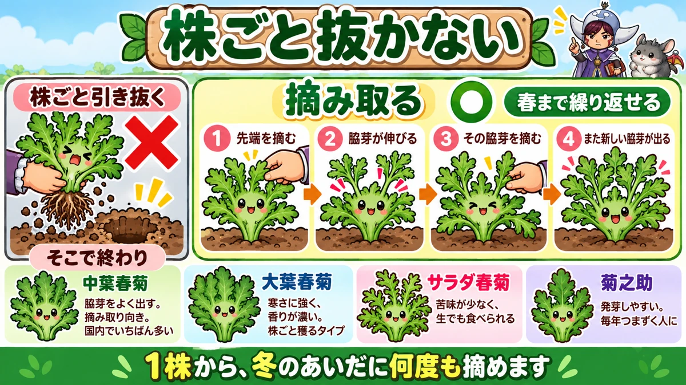
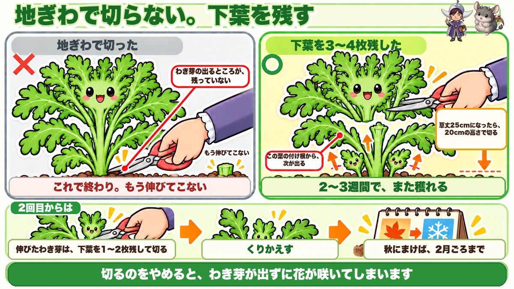
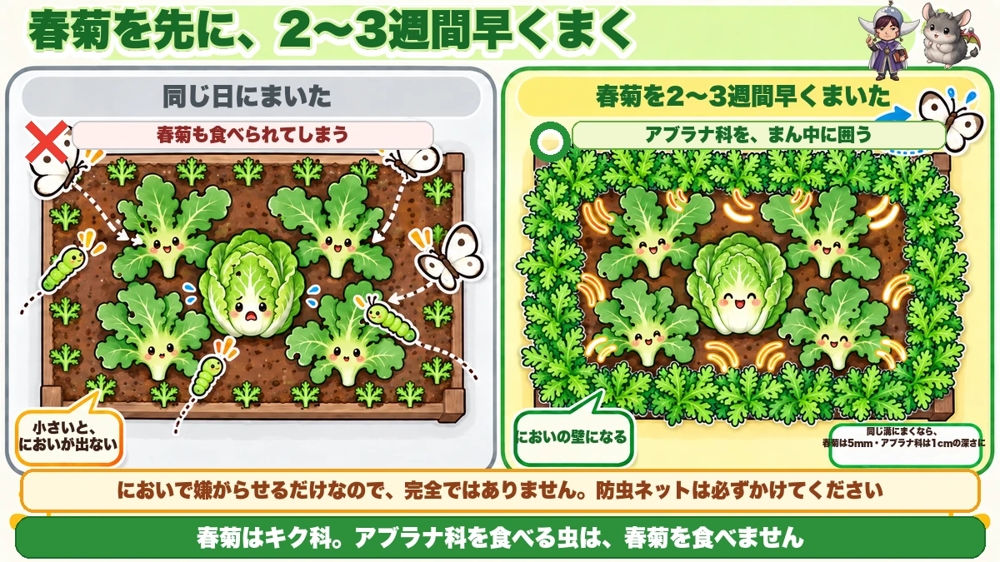
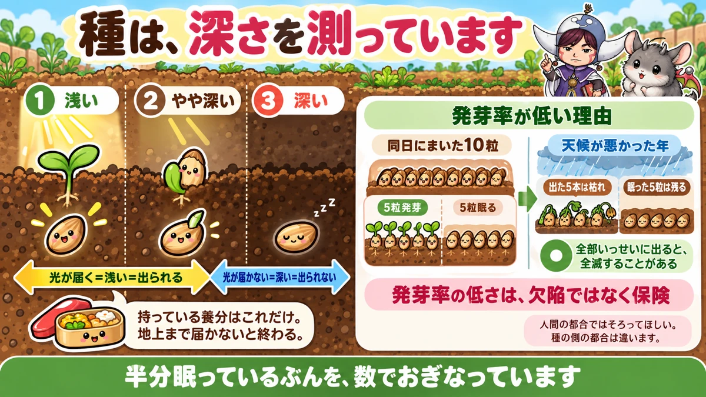

春菊の育て方｜まく時期、芽が出にくいタネのまき方、摘み取り収穫、混植、追肥、冬越し
どうも、8150（えいこう）です🌱 家庭菜園歴8年、理科の教員免許を持っていて、有機・無農薬で野菜を育てています。
📖 この記事の目次
この記事で分かること
- 春菊はキク科の野菜で、涼しい気候を好みます。秋まきが育てやすく、春まきもできます。
- 春菊のタネは、ほかの野菜より芽が出る割合（発芽率）が低めです。多めにまいて、あとで間引きます。
- 春菊のタネは、芽を出すときに光があったほうがよい性質（好光性）を持っています。まいたら土を薄くかけ、しっかり押さえます。
- 株ごと抜かずに、上のほうを摘んで収穫すると、わき芽が伸びて、何度も収穫できます。
- 独特の香りがあるので、白菜やキャベツなどの近くに植えて、虫よけを期待する混植にも使われます。
- 霜に当たると葉が傷むことがあるので、冬は不織布などで守ります。
鍋料理に欠かせない春菊。お店で買うと意外と高いですよね。しかも、鍋に入れたいときに限って、少しだけ足りなかったりします。でも、家庭菜園で育てると、冬のあいだ、必要なぶんだけ摘んで、何度も収穫できます。
春菊は、タネの芽の出方にちょっとした癖がありますが、そこさえ押さえれば育てやすい野菜です。香りがあるので虫も比較的つきにくく、無農薬でも育てやすい葉物のひとつです。冬の寒さにもある程度耐えるので、冬の畑の主役にもなってくれます。この記事では、春菊の育て方を、まく時期からタネのまき方、長く収穫するコツ、混植、冬越しまで、順番に書いていきます。説明が分かれているところは、両方の考え方を並べておきますね。
早見：春菊の基本（ひと目で分かる目安）
基本データ
- 科：キク科
- 好む気候：涼しい気候
- 芽が出る温度、育つ温度：15〜20度くらい
- 暑さ：35度以上で芽が出にくく、30度以上で育ちが悪くなる、という説明
- 土の酸度：酸性の土を嫌う。pH6.0〜6.5くらい、という説明
まく時期の目安
- 秋まき：8月下旬〜9月中旬（9月に入って10日くらいまで、という説明も）。8月中旬〜10月上旬、地域によって変わる、という説明もある
- 春まき：3〜4月（3月中旬〜5月中旬、という説明もある）
育て方のポイント
- 発芽率が低めなので、多めにまく
- 好光性なので、土は薄くかけ、しっかり押さえる
- 株ごと抜かずに摘み取ると、わき芽で何度も収穫できる
春菊という野菜
キク科の、香りのある葉物
春菊は、キク科の野菜です。地中海沿岸が原産、と説明されます。名前のとおり、春になると菊に似た黄色い花を咲かせます。葉の形も、菊の葉によく似ていますよね。関東では「春菊」、関西では「菊菜（きくな）」と呼ばれることが多いです。
鍋料理のイメージが強いですが、和え物やおひたし、天ぷらなどにも使えます。独特の香りが、春菊のいちばんの特徴です。
葉の形で、いくつかのタイプがある
春菊には、葉の切れこみの大きさによって、大葉種、中葉種、小葉種などのタイプがあります。家庭菜園では、中葉種がよく育てられ、株ごと抜いて収穫する方法にも、摘み取って長く収穫する方法にも向いている、と説明されます。
大葉の春菊は西日本でよく好まれる、という説明があります。香りや苦みが少なく、生でサラダにして食べやすいタイプの春菊もあります。
「株立ち」と「株張り」
春菊は、育ち方で「株立ち」と「株張り」の2つのタイプに分ける説明もあります。
- 株立ちタイプ：まっすぐ上に育ち、わき芽があまり出ない。一度収穫したら終わりなので、また新しくタネをまく必要がある
- 株張りタイプ：先を摘むと、わき芽が育って、どんどん大きくなる
冬のあいだずっと収穫を続けたいなら、株張りタイプを選んでください、という説明です。タネの袋に「摘み取り収穫向き」などと書かれているものを選ぶとよいでしょう。
中葉と大葉の選び方
わき芽をたくさん、長く摘み取りたいなら中葉の春菊を、という説明があります。わき芽がどんどん伸びて、摘み取りながら収穫を楽しめる品種で、病気にも強い、という説明です。
一方、大葉の春菊は、株ごと収穫するタイプで、関西でよく好まれ、寒さに強い特徴がある、と説明されます。香りについては、強いという説明と、おだやかという説明があり、品種によって違うようです。
育ちが遅い葉物
春菊は、葉物の中では育つのがゆっくりな野菜です。小松菜などと同じ感覚でまくと、なかなか大きくならずに驚くかもしれません。冬の鍋に使うから冬にまけばいい、と考えると、まくのが遅くなってしまいます。一方で、暑すぎる時期にまくと、芽が出にくくなります。秋まきなら、暑さが少し落ち着いてきたころにまくのがコツです。

土づくり
酸性の土を嫌う
春菊は、酸性の土を嫌う野菜です。酸性の土では、芽が出ても育ちが悪くなったり、葉の色が悪くなったりすることがあります。ちょうどよい酸度は、pH6.0〜6.5くらい、という説明があります。土が酸性に傾いている場合は、石灰で調整します。
苦土石灰を使う場合はタネをまく2週間以上前に、有機石灰（かき殻石灰など）なら直前でもよい、という説明があります。石灰を入れる前に、一度土の酸度を測っておくと安心です。
肥料は、前の野菜の残りを使う方法も
あらかじめ元肥を入れておく方法と、夏野菜のあとの、肥料が残っている畝に、新しい肥料を入れずに耕してまく方法があります。秋になってから土づくりを始めると間に合わないこともあるので、残った肥料を活用する、という考え方です。ただし、やせた土でも肥料なしでよい、という意味ではありません。
肥料の量の例と、肥料のない層
にんにくのあとの畑で、1平方メートルあたり、牛ふん堆肥を約2リットル、鶏ふんを200ccほど入れた例があります。
このとき、肥料を入れた土の上に、まわりの肥料の入っていない土を盛り上げて、肥料のない層を作っておく、という工夫が紹介されています。タネが直接肥料にふれないので、畝を作ったあと、すぐにタネをまくことができる、という説明です。
タネのまき方
発芽率は、ほかの野菜より低め
春菊のタネは、ほかの野菜と比べて芽が出る割合が低めです。ほかの野菜の発芽率が80%くらいなのに対して、春菊は50%くらい、と説明されます。だいたい半分くらいしか芽が出ないと考えて、多めにまくのがポイントです。
ただし、これは目安です。タネの状態や、まいたときの条件によって変わります。
手順1：すじまきなら、溝を作る
すじまきの場合は、20cmくらいの間隔で、浅い溝を作ります。溝の中に、1cmくらいの間隔でタネをまいていきます。ふつうの葉物は2〜3cm間隔でまくことが多いので、それよりも多めにまくイメージです。
これは「最後に1cm間隔で育てる」という意味ではありません。たくさん芽を出させてから、間引いて広げていきます。
手順2：マルチなら、穴に数か所まく
穴のあいたマルチを使う場合は、ひとつの穴の中に、4か所ほどに分けてまく、という例があります。
手順3：土は薄くかける
春菊のタネは、芽を出すときに光があったほうがよい性質（好光性）を持っている、と説明されます。そのため、まいたあとにかける土は、ごく薄くします。タネが隠れる程度に薄くかける、という説明や、タネが少し見えるくらいでもよい、という説明があります。
手順4：しっかり押さえる
土をかけたら、手で軽く押さえて、タネと土をしっかり密着させます（鎮圧）。土の水分がタネに吸収されて、芽が出やすくなる、と説明されます。土が薄いぶん、押さえておかないと、乾きやすく、水やりでタネが流れやすくなります。
支柱を押しつけて、溝を作る
すじまきの溝は、支柱を土に押しつけると、簡単に作れます。直径1cmくらいの支柱なら、深さもちょうど1cmくらいになる、という説明があります。ひもを張って、それに沿って溝をつけると、まっすぐな列になります。
この1cmは溝の深さで、タネの上にかける土の厚さではありません。溝の底にタネをまき、土はごく薄くかけます。
押さえると、芽がそろう
まいたあとにしっかり押さえることで、芽の出方がそろう、と説明されます。春菊も、にんじんと同じように、タネのまわりが乾いていると芽が出にくくなるので、よく押さえてください、という説明もあります。思っている以上にしっかり押さえてください、と話す人もいます。
乾燥を防ぐ覆い
春菊は、土の乾燥に弱い野菜です。芽が出るまでは、土を乾かさないようにすることが大切です。まいたあとに不織布をかけて、乾燥を防ぐとともに、寒さよけにする方法も紹介されています。
手順5：水をやる
まいたあとは、水をやります。暑さが残る秋の時期なら、朝晩の涼しい時間、特に夕方に水をやる、という説明があります。
タネが浅いところにあるので、じょうろを1か所に止めて水をかけると、タネが流れてしまいます。じょうろを動かしながら、やさしく散らすように水をやりましょう。
ばらまいて、あとで移す方法も
春菊は芽の出方がそろいにくいので、手間をかけすぎず、空いている場所にばらまいておいて、芽が出たら移し替える、という方法を紹介する人もいます。畝のあいだに、余ったタネをまいておく、という提案もあります。
苗を育てて植える方法も
家庭菜園なら、育苗の手間を省いて直まきがおすすめ、という説明がある一方で、週に1回しか畑に行けない人が、育てた苗を植えて、ちゃんと育っている例もあります。畑に行ける回数に合わせて、直まきか苗かを選びましょう。
春菊は苗にしても大丈夫
育苗用のトレー（セルトレイ）で春菊の苗を育ててから畑に植えても、十分育つ、と説明されます。一方で、大根やにんじん、かぶなどは、セルトレイで育てて畑に植えるのは非常に難しいので、あまりやらないほうがよい、とも説明されています。根を食べる野菜は、植え替えで根が傷むと形が悪くなるからです。春菊は葉を食べる野菜なので、苗から育てても問題ないんですね。
安いタネでも、芽の出方は変わらなかった例
ホームセンターのタネと、100円ショップのタネで、春菊の芽の出方を比べた例があります。まいてから10日の時点で、ほとんど差は出ていなかった、という結果です。ただし、これは10日目の観察で、その後の育ち方まで比べたものではありません。

株ごと抜かずに、摘み取って長く収穫する
2つの収穫のしかた
春菊の収穫には、2つのやり方があります。
- 株ごと抜いて収穫する
- 株を残して、上のほうを摘み取って収穫する
株ごと抜く方法も、もちろん間違いではありません。一度にたくさん収穫したいときや、次の野菜を植える予定があるときは、株ごと抜くほうが向いています。でも、摘み取って収穫すると、残った株からわき芽が伸びてきて、何度も収穫できます。冬のあいだ、少しずつ長く楽しみたいなら、摘み取り収穫がおすすめです。

最初の収穫：下の葉を残して上を切る
本葉が10枚くらい、草丈が25cmくらいになったら、下の葉を3〜4枚残して、その上を収穫する、という説明があります。大切なのは、地面ぎりぎりで切るのではなく、下の葉を残しておくことです。残した葉のつけ根から、わき芽が伸びてきます。
草丈15〜20cmくらいで、いちばん上の成長点を摘む、という説明もあります。
2回目からの収穫：わき芽を摘む
わき芽が伸びてきたら、わき芽の下の葉を1〜2枚残して、その上を収穫します。わき芽が10〜15cmくらいに伸びたときが、収穫の目安、という説明があります。これをくり返していくと、株からどんどん新しいわき芽が出てきます。
摘み取るときの道具
摘み取りは、手で折り取ることもできますが、清潔なはさみを使うと、切り口がきれいで株を傷めにくくなります。切る位置は、残したい葉のすぐ上です。わき芽が出てくる葉のつけ根を、切り落としてしまわないように気をつけましょう。
摘み取りのたびに、株を見る
摘み取るたびに、葉の色や、わき芽の伸び具合、虫がついていないかを見ておくと、株の調子の変化に早く気づけます。葉の色が薄くなっていたら追肥、わき芽が細くなってきたら株が疲れてきたしるし、というように、収穫しながら株の様子を確かめていきましょう。
何回くらい収穫できるか
収穫できる回数は、2〜3回という例や、もっと多い例があります。管理がうまくいけば、春まで何度も収穫できる、という説明もあります。ただし、株の状態や寒さによって変わるので、何回とは決められません。
株ごと抜く場合
株ごと収穫する場合は、本葉4〜5枚のころに、株と株のあいだが5〜6cmになるように間引き、本葉7〜8枚、草丈20cmくらいになったら、株ごと抜いて収穫する、という説明があります。
間引き
間引きは2回くらいで
多めにまいた春菊は、芽が出そろったら間引いていきます。込み合ったままだと、ひょろひょろと細長く育ってしまうからです。芽が出て1週間後くらいに最初の間引きをして、だいたい2回くらいで間引きを終える、という目安があります。
間引くと風通しがよくなり、病気の予防にもなる、と説明されます。込み合ったところだけを間引いて、あとはそのまま伸ばす、という方法もあります。
はさみで根元から切る
間引くときは、抜くのではなく、はさみで根元から切ると、残したい株の根を動かさずにすむ、という説明があります。間引いた若い葉も、捨てずに料理に使えます。
間引いた株を、空いた場所に移す
春菊は芽の出方がそろいにくいので、ところどころに芽が出ない場所ができることがあります。そんなときは、込み合ったところから間引いた株を、根を傷めないように土ごと掘り上げて、空いた場所に移して植える方法もあります。春菊は葉を食べる野菜なので、植え替えても育ちやすいです。植え替えたあとは、根づくまで土を乾かさないようにしましょう。
追肥
摘み取りが始まったら追肥
摘み取って収穫を始めたら、わき芽を伸ばすために追肥をします。葉の色が薄くなってきたり、わき芽があまり伸びなくなってきたりしたら、また追肥してみる、という説明があります。長く収穫するので、収穫のたびに追肥をする、という説明もあります。
追肥のやり方
株から左右に20cmくらい離れたところに、移植ごてで穴をあけて肥料を入れ、土をかけて押さえる、という例があります。反対側にも同じように入れます。
条と条のあいだに肥料をまいて、軽く耕す（中耕する）方法もあります。肥料の効きがよくなるだけでなく、草を抑えたり、水はけをよくしたりする効果もある、と説明されます。

白菜やキャベツと一緒に植える
香りで虫よけを期待する
春菊の独特の香りを利用して、キャベツや白菜、大根などのアブラナ科の野菜と一緒に植え、虫よけの効果を期待する方法（混植）があります。キク科とアブラナ科を混ぜて植えることで、害虫を遠ざける効果が期待できる、と説明されます。
ただし、どれくらい虫が減るのかを測った結果があるわけではありません。「虫がまったく来なくなる」ではなく、「少し減らす手助けになるかもしれない」くらいに考えておきましょう。
春菊で囲む
春菊で畝のまわりを囲み、その中にアブラナ科の野菜をまく、という配置も紹介されています。春菊を「壁」のようにする考え方です。
春菊を先にまく
大根と春菊を一緒にまいたら、春菊が育つ前に、春菊の芯まで虫に食べられてしまった、という失敗例があります。春菊が小さいうちは、香りがまだ十分に出ないので、虫よけの効果が期待しにくい、という考え方です。
そこで、大根より2〜3週間くらい早く春菊をまいておく、という方法が紹介されています。春菊が先にある程度育っていれば、香りで虫よけの効果が期待しやすくなる、という説明です。それでも、混植の効果は完全ではない、と話している人自身が説明しています。
交互にまくときは、深さを変える
穴あきマルチで、春菊とアブラナ科の野菜を交互にまく方法もあります。このとき、春菊は5mmくらい、アブラナ科は1cmくらいの深さに押しこむ、という例があります。春菊は好光性なので浅く、アブラナ科はそれより少し深くまくのがポイントです。
すじまきなら、条と条のあいだを15cmくらいあけて、春菊は1〜2cm間隔でまく、という例があります。
春菊は、横に広がる
春菊は育つと横に広がっていくので、一緒に植える野菜とのあいだに、余裕をもたせて配置しましょう。
豆と一緒に植える
スナップえんどうやそら豆の近くに、春菊を一緒に植える例もあります。アブラムシを遠ざける効果や、風よけの役目が期待されています。葉物の春菊が、土の中の余分な窒素を吸ってくれる、という話もあります。タネから3週間ほど育てた春菊の苗を、豆の近くに植える、という例があります。
冬越し
霜への強さは、説明が分かれる
春菊の寒さへの強さは、説明が分かれています。軽い霜では枯れないけれど、強い霜では葉が枯れる、という説明や、寒さに少し弱い、霜で葉がだめになる、という説明があります。品種や株の大きさでも違います。
霜が降りるようになったら、不織布かビニールのトンネルで守る、という説明があります。
不織布とビニールの違い
不織布のトンネルは、閉め切ったままでも大丈夫だけれど、ビニールのトンネルは、日中に換気が必要、と説明されます。晴れた日にビニールを閉め切ったままだと、中が暑くなりすぎるからです。
重ねがけで冬を越した例
不織布と保温用のビニールを重ねて、べたがけにして12月を過ごし、1月の時点で春菊が育っていた、という例があります。移植した苗が最初の収穫を終えて、次の収穫を待っている、という観察です。
冬も、定期的に摘む
11〜12月は、わき芽が10〜15cmにすぐ伸びたけれど、1月になるとわき芽の出が悪くなった、という観察があります。寒くて伸びが遅い時期でも、定期的に収穫するようにすすめられています。
春になったら、とう立ちに注意
冬を越した株は、だんだん弱ってきて、新しいわき芽が出にくくなります。暖かくなってくると、とう立ち（花の茎が伸びること）して、味が落ち、茎も硬くなる、と説明されます。わき芽が出なくなって、花のつぼみが見えてきたら、収穫の終わりが近いしるしです。
春まきの場合
春にまく場合は、3月に不織布をべたがけして守り、4月に強い霜がなくなったら外す、という説明があります。
秋まき春菊の1年（例）
秋にまく春菊の、おおまかな流れの例です。地域やその年の気候で前後するので、目安として読んでください。
8月下旬〜9月中旬：タネまき
暑さが少し落ち着いたころに、タネをまきます。多めにまいて、土は薄く、しっかり押さえます。芽が出るまでは、土を乾かさないように気をつけます。
9月〜10月：間引き
芽が出て1週間くらいで最初の間引き、そのあともう1回くらい間引いて、株の間隔を広げていきます。間引いた若い葉も食べられます。
10月〜11月：摘み取り収穫の始まり
草丈が20〜25cmくらいになったら、下の葉を残して、最初の摘み取りをします。摘み取りを始めたら追肥をして、わき芽を伸ばします。
12月〜2月：冬のあいだの収穫
霜が降りるようになったら、不織布やトンネルで守ります。寒さで伸びがゆっくりになっても、伸びたわき芽を定期的に収穫します。鍋料理の季節に、必要なぶんだけ摘んで使えます。
3月ごろ：とう立ちで終わり
暖かくなってくると、とう立ちが始まり、茎が硬くなってきます。収穫の終わりです。株を片づけて、次の野菜の準備をします。

失敗の見分け方
芽がほとんど出ない
タネを深くまきすぎたか、土が乾いてしまったか、暑すぎた可能性があります。春菊は好光性なので、土は薄くかけて、しっかり押さえます。暑い時期は、夕方に水をやるなど、乾かさないようにしましょう。
芽が出たのに、そろわない
春菊は、芽の出方がそろいにくい野菜です。多めにまいておき、出た芽を生かして、空いたところには、あとから苗を移すなどして調整しましょう。
摘み取ったあと、わき芽が出てこない
地面ぎりぎりで切ってしまい、わき芽の出る葉のつけ根が残っていなかった可能性があります。下の葉を3〜4枚残して切るようにしましょう。肥料が足りていない場合もあるので、葉の色が薄ければ追肥をしてみてください。
冬に葉が傷んだ
強い霜に当たった可能性があります。不織布やトンネルで守りましょう。
春になって、茎が硬くなった
暖かくなって、とう立ちが始まった可能性があります。収穫の終わりが近いので、残りを早めに収穫しましょう。
葉の色が黄色っぽくなってきた
肥料が足りなくなってきたか、土が酸性に傾いている可能性があります。摘み取り収穫を続けていると、株はたくさんの栄養を使うので、葉の色が薄くなってきたら追肥をしてみてください。それでも改善しないなら、土の酸度を測ってみましょう。
説明が分かれていること
秋まきの時期
- 8月下旬〜9月中旬が目安、という説明（同じ説明の中で、9月に入って10日くらいまで、とも）
- 8月中旬〜10月上旬、地域によって変わる、という説明
土のかけ方
- タネが隠れる程度に、薄く土をかける、という説明
- タネが少し見えるくらい、浅くてよい、という説明
- 軽く5mmくらい押しこむ、という例
どれも「深くしない」という点は共通しています。
霜への強さ
- 軽い霜では枯れないが、強い霜では枯れる、という説明
- 寒さに少し弱い、霜で葉がだめになる、という説明
- 大葉の春菊は寒さに強い、という説明
摘み取りの目安
- 本葉10枚、草丈25cmくらいで、下の葉3〜4枚を残して切る、という説明
- 草丈15〜20cmで成長点を摘む、という説明
- 草丈25cmくらいで、葉を3枚ほど残す、という説明
直まきか、苗か
- 家庭菜園なら、育苗の手間を省いて直まきがよい、という説明
- 週1回しか行けない畑でも、苗を植えてちゃんと育った、という例
収穫できる回数
- 収穫は2〜3回くらい、という例
- 管理がうまくいけば、春まで数えきれないほど収穫できる、という説明
株の状態や寒さ、追肥のしかたで変わります。何回収穫できるかより、株が元気にわき芽を出し続けているかを見て判断しましょう。
よくある質問
Q. 冬の鍋に間に合わせるには、いつまけばいいですか？
A. 秋まきの適期は、8月下旬から9月中旬くらいが目安です。春菊は育つのがゆっくりなので、冬になってからまくと、鍋の季節に間に合わないことがあります。暑さが少し落ち着いたころにまいておくと、冬に収穫を楽しめます。
Q. プランターでも育てられますか？
A. 育てられます。摘み取り収穫なら、少ない株数でも長く収穫できるので、プランター向きです。乾きやすいので、土の乾き具合を見て水をやってください。
Q. 摘み取った先端も食べられますか？
A. 食べられます。摘み取った成長点の部分も、やわらかくて香りのよい葉です。捨てずに料理に使いましょう。
Q. 春菊の花は咲かせてもいいですか？
A. 春菊は、春になると黄色や白の、菊のような花を咲かせます。花が咲くころには茎が硬くなって、食べるのには向かなくなります。花を楽しむなら、そのまま咲かせてもかまいません。
Q. 収穫が終わった春菊の株は、どうすればいいですか？
A. 春菊の茎や葉は、比較的やわらかく、はさみで切りやすいので、乾かしてから土にすき込んだり、堆肥にしたりする方法が紹介されています。ただし、病気が出ていた株は、畑に戻さないようにしましょう。
Q. 前に何を育てた場所にまけばいいですか？
A. とうもろこしのあと、レタスやキャベツのあと、里芋のあと、なすのあと、にんにくのあとなど、いろいろな例があります。前の野菜の肥料が残っているかどうかを見て、肥料の量を調整してください。
Q. 春菊にも虫はつきますか？
A. 香りがあるので虫がつきにくいと言われますが、まったくつかないわけではありません。小さいうちは、芯を食べられることもあります。ときどき葉の裏や芯を見て、虫がいないか確かめましょう。
Q. 間引いた春菊も食べられますか？
A. 食べられます。間引いた若い葉は、やわらかく、香りもおだやかです。サラダやおひたしに使ってみてください。
Q. 香りが苦手な家族がいます
A. 春菊の中には、香りや苦みをおさえた、生でサラダにして食べやすいタイプもあります。タネの袋の説明を見て選んでみてください。また、若いうちに摘んだやわらかい葉は、香りも比較的おだやかです。
Q. 冬に、もっとたくさん収穫したいです
A. 冬は寒さで伸びがゆっくりになるので、トンネルなどで保温すると、わき芽の伸びがよくなります。株の数を少し多めに育てておくのも一つの方法です。摘み取ったあとの追肥も忘れずに。
Q. 春まきと秋まき、どちらがいいですか？
A. 春菊は涼しい気候を好むので、秋まきのほうが育てやすい、と説明されます。秋まきは冬のあいだ長く収穫を楽しめます。春まきは、暖かくなるにつれてとう立ちしやすくなるので、収穫の期間が短くなりがちです。初めてなら、秋まきから始めるのがおすすめです。
Q. 株と株のあいだは、どれくらいあければいいですか？
A. 株ごと収穫する場合は、本葉4〜5枚のころに5〜6cm間隔に間引く、という説明があります。摘み取りで長く収穫する場合は、わき芽が伸びて株が横に広がっていくので、それよりもゆとりを持たせて育てるとよいでしょう。
Q. 収穫した春菊を長持ちさせるには？
A. 春菊は葉物なので、収穫したらなるべく早く使うのがいちばんです。摘み取り収穫なら、食べるぶんだけをその日に摘めるので、いつも新鮮な春菊を使えます。これも、家庭菜園で春菊を育てるよいところです。
Q. 春菊の芽が出たあと、急に倒れてしまいました
A. 芽が出たばかりの小さな苗は、土が乾きすぎたり、逆に湿りすぎたりすると、根元から倒れてしまうことがあります。間引きが遅れて込み合っていると、風通しが悪くなって、病気が出やすくなることもあります。土の湿り具合に気をつけて、込み合っているところは早めに間引いてください。
Q. 寒い地域でも育てられますか？
A. 寒い地域では、秋まきは早めにまいて、本格的な寒さが来る前に株を育てておくことが大切です。冬は、不織布やトンネルでしっかり守りましょう。春まきにして、とう立ちする前に収穫する方法もあります。
学ぶ🔬 春菊のタネは、光で深さを測っている
ここからは、春菊のタネと育ち方のしくみについて、少しだけ深く書いておきます。読み飛ばしても大丈夫です。
光を感じて芽を出すタネ
春菊のタネは、芽を出すときに光があったほうがよい「好光性種子（こうこうせいしゅし）」です。タネが光を感じると、「ここは地面の近くだ」と判断して、芽を出す準備を始める、と考えられています。
小さなタネは、たくわえている栄養が少ないので、深いところで芽を出してしまうと、地上にたどり着く前に力尽きてしまいます。光を感じたときだけ芽を出すのは、地面の近くにいることを確かめてから芽を出す、という小さなタネの生き残りの工夫なんですね。だから、春菊のタネに土を厚くかけると、芽が出にくくなるのです。
わき芽が伸びるしくみ
植物の茎の先端（成長点）は、わき芽が伸びるのをおさえる物質を出している、と考えられています。先端が元気なうちは、わき芽はあまり伸びません。
摘み取りで先端を切ると、このおさえる力がなくなって、葉のつけ根にあったわき芽が伸びはじめます。下の葉を残して切るのは、わき芽が出てくる「葉のつけ根」を残すためなんですね。
なぜ、香りで虫が減ると言われるのか
虫の多くは、においを手がかりにして、自分の好きな植物を探しています。キャベツや白菜につく虫は、アブラナ科の野菜のにおいをたよりにやってきます。
近くに春菊のような強い香りの植物があると、そのにおいがまざって、虫が目当ての野菜を見つけにくくなる、という考え方があります。混植で虫よけを期待するのは、このしくみによるものです。ただし、効果の強さは、植え方や虫の種類によって違います。
キク科とアブラナ科を組み合わせるわけ
畑でよく育てられる冬の野菜は、キャベツ、白菜、大根、小松菜など、アブラナ科の野菜が多いです。同じ科の野菜は、つきやすい虫や病気が似ていることが多いので、アブラナ科ばかりを並べていると、同じ虫が次々に移っていきやすくなります。
春菊は、アブラナ科とは別のキク科の野菜です。違う科の野菜を間にはさむことで、虫が移りにくくなることや、香りで虫を遠ざけることが期待されている、というわけです。
春になると、とう立ちするわけ
春菊は、春になって日が長くなり、暖かくなってくると、花を咲かせる準備を始めます。花の茎が伸びると、葉や茎に回っていた栄養が花のほうへ使われるので、茎は硬く、味も落ちていきます。冬のあいだが、春菊の葉をいちばんおいしく食べられる時期、というわけです。
まとめ
ここまで読んでくださって、ありがとうございます！
春菊の育て方のポイントを、もう一度まとめておきます。
- 春菊は涼しい気候を好むキク科の野菜。秋まきは8月下旬〜9月中旬が目安
- 発芽率は低めなので、多めにまく。すじまきなら1cm間隔くらい
- 好光性なので、土は薄くかけて、しっかり押さえる。水はやさしく
- 株ごと抜かずに、下の葉を3〜4枚残して摘むと、わき芽で何度も収穫できる
- 摘み取りが始まったら追肥。葉の色や、わき芽の伸びを見て
- 白菜やキャベツと混植するなら、春菊を先にまいておく
- 霜が降りるようになったら、不織布やトンネルで守る。ビニールは日中に換気
- 春にとう立ちしてきたら、収穫の終わりが近い
春菊は、摘んでも摘んでも、また新しい芽を伸ばしてくれる、頼もしい冬の野菜です。タネのまき方に少しだけ気をつければ、冬のあいだ、鍋の日に必要なぶんだけ摘んで使える、うれしい存在になってくれます。
まずは、プランター1つ分からでも、春菊のタネをまいてみてください。土を薄くかけて、しっかり押さえる。それだけ覚えておけば大丈夫です🌼
春菊のタネ
発芽率が5割ほどなので、ケチらず厚くまくのが正解です。少量パックを買うより、ある程度の量があるほうが結果的に安く済みます。
![[商品価格に関しましては、リンクが作成された時点と現時点で情報が変更されている場合がございます。]](https://hbb.afl.rakuten.co.jp/hgb/552615f0.9cc2855e.552615f1.776f7de9/?me_id=1251188&item_id=10000837&pc=https%3A%2F%2Fthumbnail.image.rakuten.co.jp%2F%400_mall%2Fyonezawa%2Fcabinet%2Ftane01%2F10hamono%2Fchubashungikus.jpg%3F_ex%3D240x240&s=240x240&t=picttext "[商品価格に関しましては、リンクが作成された時点と現時点で情報が変更されている場合がございます。]")

不織布
春菊は光が当たらないと芽が出ないので、土を薄くしかかけられません。そのぶん乾きやすいので、上から不織布をかけて水分を守ります。
![[商品価格に関しましては、リンクが作成された時点と現時点で情報が変更されている場合がございます。]](https://hbb.afl.rakuten.co.jp/hgb/56bc237a.e97551b1.56bc237b.2513ed10/?me_id=1310260&item_id=10000879&pc=https%3A%2F%2Fthumbnail.image.rakuten.co.jp%2F%400_mall%2Fdiokasei%2Fcabinet%2F007fusyokufu%2F12g%2Fimgrc0092049705.jpg%3F_ex%3D240x240&s=240x240&t=picttext "[商品価格に関しましては、リンクが作成された時点と現時点で情報が変更されている場合がございます。]")
防虫ネット
春菊は香りが強く虫がつきにくい野菜ですが、白菜やキャベツの間に植えるときは、そちらを守るためにネットが要ります。
![[商品価格に関しましては、リンクが作成された時点と現時点で情報が変更されている場合がございます。]](https://hbb.afl.rakuten.co.jp/hgb/56bc205d.0066fedc.56bc205e.af56d163/?me_id=1260467&item_id=10000299&pc=https%3A%2F%2Fthumbnail.image.rakuten.co.jp%2F%400_mall%2Fmarsol-morishita%2Fcabinet%2Fshouhinn%2Fbouchuu%2Fimgrc0090950099.jpg%3F_ex%3D240x240&s=240x240&t=picttext "[商品価格に関しましては、リンクが作成された時点と現時点で情報が変更されている場合がございます。]")
あわせて読みたい